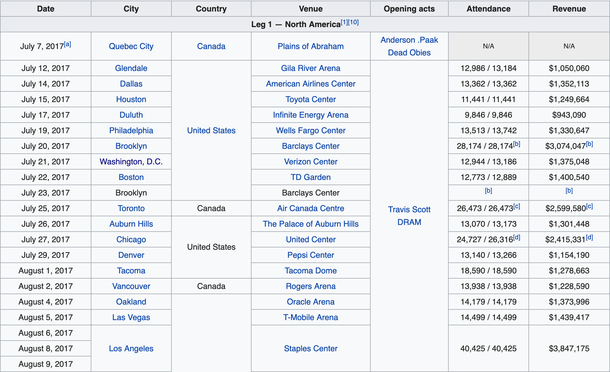
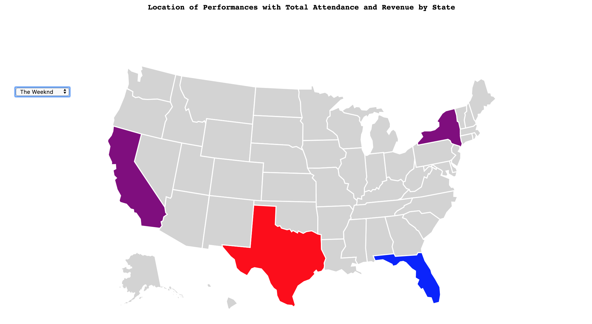
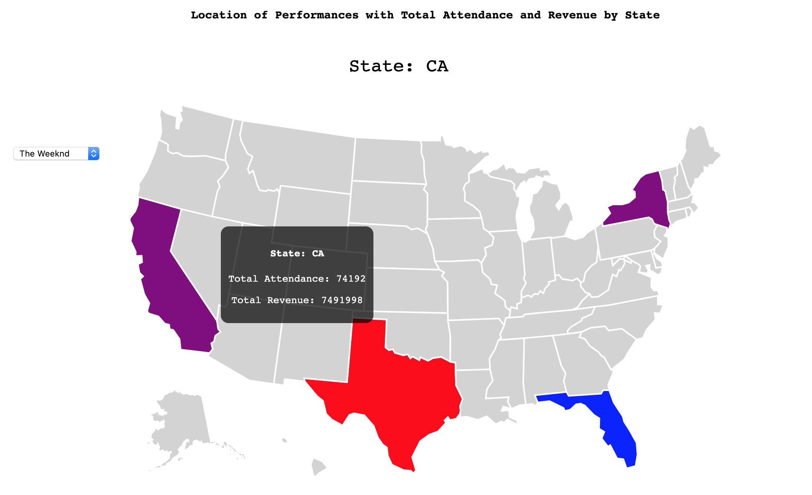
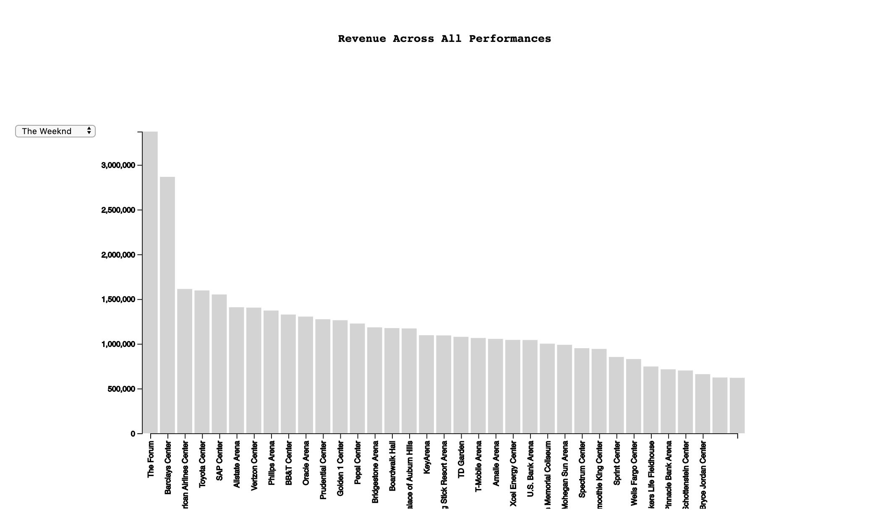
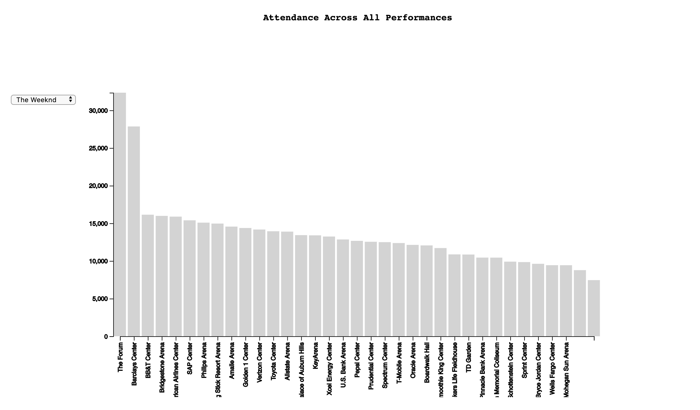
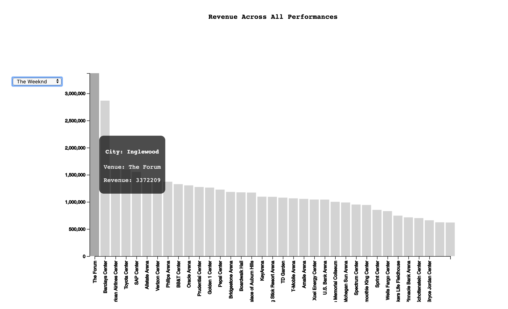
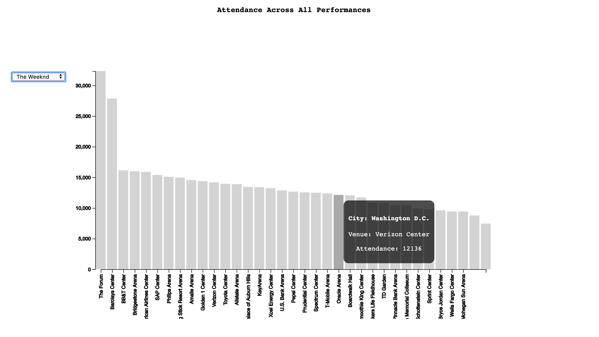

Process Book:
Music Tours Visualization by Ian Katzman and Nikash Taskar
-
Overview and Motivation:
- The main goal of this project is to create a visualization that shows useful data about how successful certain musical artists are on
tour. We do this by displaying different information on a US Map and bar graphs (as of right now). We gathered this information from
Wikipedia pages specific to the tours we are using (more about that later), and we created the visualization using d3 Javascript.
- Our main motivation for this project comes from us being avid music fans. We really enjoy music, and going to concerts, but it seems that
a lot of major artists tend to avoid coming to St. Louis. We were curious as to why artists avoid St. Louis, and some cities, and tend to
gravitate towards other cities. We thought that if we could gather information about different artist's performances, like the attendance,
revenue, etc, we can start to determine which cities artists have the most success in.
-
Related Work:
- We were not directly inspired by a specific dataset or visualization, but as stated earlier we were inspired to answer a question
we had noticed about a certain trend with tour stops by musical artists. That is, we were inspired to answer the question as to why
artists tend to stop more at some cities rather than other cities.
-
Questions:
- What stops were the most attended for each artist on their tour?
- What stops were the least attended for each artist on their tour?
- What stops made the most money for each artist on their tour?
- What stops made the least money for each artist on their tour?
We began with the questions above as a baseline, but as we were working we realized we needed to look into data that involved all
of the tours we were studying, so we formed some more questions like:
- What stops were the most attended overall?
- What stops were the least attended overall?
- What stops made the most money overall?
- What stops made the least money overall?
- Were there any stops made by all artists? Only one artist? What is the crossover like?
We will most likely try to come up with more questions before the final project is due.
-
Data
- We got our data from 5 Wikipedia pages with information about 5 specific artists' tours:
- This data was gathered and cleaned using a webcrawler created in Python. We isolated the data from the charts that were on each Wikipedia page that displayed
data about each stop on the tour, and put that data into separate JSON files for each tour. We got data about each tour stop in these categories:
- City of tour stop
- State of tour stop
- Abbreviation of that state
- Date of tour stop
- Country of tour stop (should be United States for all of them
- Venue of tour stop
- Attendance of tour stop
- Revenue of tour stop
-
Exploratory Data Analysis:
- The first way that we saw our data was looking at the charts on the Wikipedia pages. An example of one of these charts is shown below.
These charts were extremely helpful as they contained almost all of the information we needed in order to create the visualization we
wanted to create. We struggled at first to find a reliable data source that wouldn't cost money or be illegal to access, so finding these
charts was a relief. They helped us to create the final form of what we wanted our design to be, because they gave us specific information
that were were looking for, like attendance and revenue for each spot in particular.
- Example of one of the charts we used:

-
Design Evolution:
We generally have stuck with the design we originally imagined, but we have added on a lot of extra features along the way:
- Our first and original design (from milestone 1) was a USA map that displayed information about each state based on
whether or not the selected artist had a tour stop in that state
- We then added the information by using tooltips for each state, that either displayed the tour stop information or a message
stating there was no stop for that tour in that state
- Then we added bar charts below the USA Map that displayed the venues from highest to lowest based on attendance, and venues
from highest to lowest based on revenue (in two separate bar charts)
- Our most recent change is adding color to our USA map to signify the highest revenue and attendance for each tour, and for all
the tours. Purple designated the highest state in both revenue and attendance, red is for the state with the highest revenue,
and blue is for the state with the highest attendance.
- We plan on adding more features for the final submit.
-
Implementation:
- The USA map for a specific artist:

- The USA map for a specific artist when you hover your mouse over a state:

- The revenue bar chart for a specific artist, which is displayed when an artist is chosen in the selector:

- The attendance bar chart for a specific artist, which is displayed when an artist is chosen in the selector:

- The revenue bar chart for a specific artist, when you hover over one of the bars:

- The attendance bar chart for a specific artist, when you hover over one of the bars:

-
Evaluation:
- From this project we were able to determine what states and cities usually provide the most success for artists. We were able
to find trends about certain cities that tend to not perform well for artists. We hope to dive deeper into trends for our final
version of the project, to truly find the answers we set out to find in this project.
- Our visualization works pretty well. There are some bugs we still have to fix, and some styling to fix, but the general
functionality is exactly how we wanted it to be at this stage. Overall we are satisfied with our work so far.